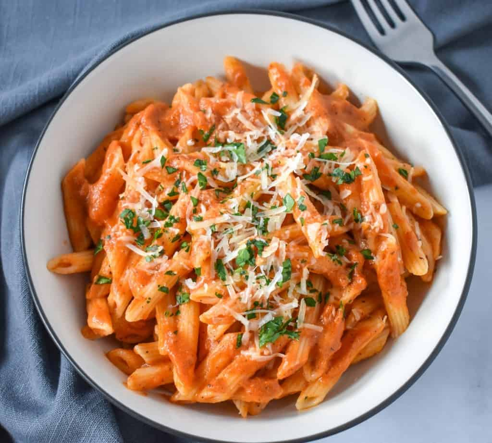

Odin Recipes
Pasta with Vodka Sauce

A bowl of penne with vodka sauce and topped with parmesan and parsley
This dish will give you that amazing tomato and cream taste without
being too heavy. Italian grandmothers will rejoice at this recipe
because of the authenticity.
Ingredients
- 500g dry pasta
- 1 can San Marzano tomatoes
- 3 cloves garlic
- 1 medium onion
- Few leaves of fresh basil
- 50g of heavy cream
Steps
- Boil a pot of water and add your pasta too cook until al dente
- Add your onions and garlic with some oil on medium heat
- Once onions are translucent, add your basil
- After 15 seconds, add your can of San Marzano tomatoes
- Cook sauce until pasta is al dente, then drain but keep some
pasta water
- Mix sauce with pasta until combined